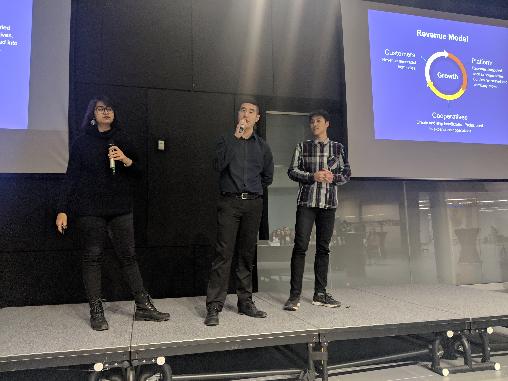
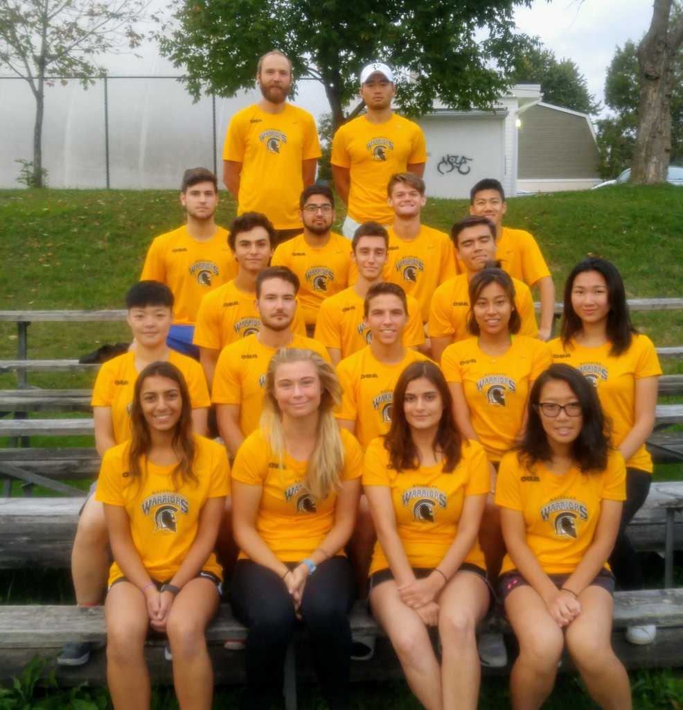
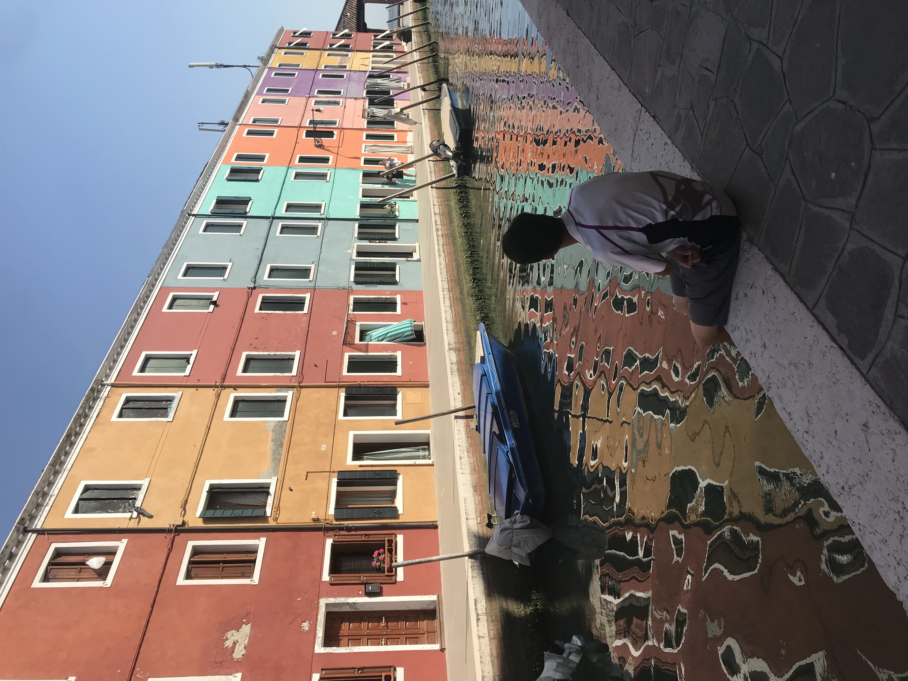
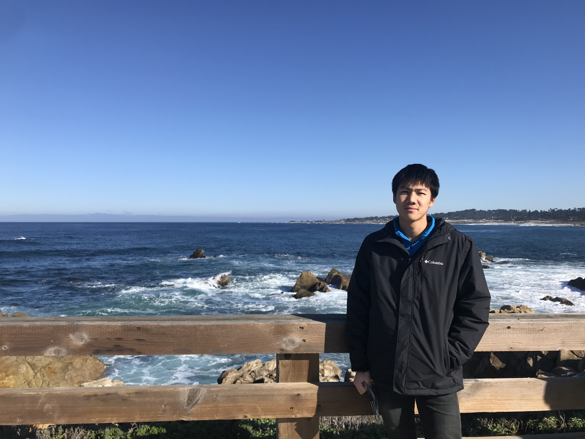
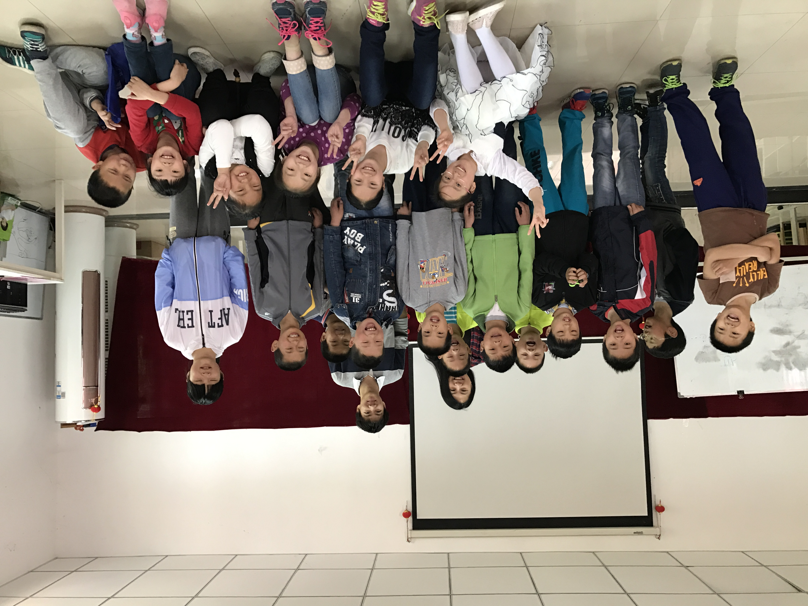

Why not turn ideas 💡 into actions? My team and I pitched 🎤 our idea of creating a handicraft e-commerce - Craft Collective at the 2019 Hult Prize with the goal of employing 10,000 women.
I am a student athlete playing tennis 🎾, a sport that I've dedicated since the age of 10. Every tennis match is a challenge that keeps me going. In 2018, I became an officially certified tennis coach.
I travelled 13 countries ⛰ during my exchange in the UK. At the time, I also helped fundraise for a charity by hitchhiking from Leeds to Cologne within 36 hrs. ⏳
 Languages: C++, Data structure programs C Systems programming Python, AI & machine learning R, Time-series analysis MATLAB, Scientific computation HTML, CSS, JavaScript, SQL, Ruby
Frameworks & Libraries: Rails, React, Scikit-learn, Pandas, TensorFlow
Tools: Git, Docker, Valgrind, RSpec
Sample Projects: Dungeons & Dragons, Traffic, Fifth Grader, Matrix Stiffness
Email: sjtan@uwaterloo.ca
Social Good
I joined the podcast crew 🎙 at Ideas Without Borders in 2018, advocating systems thinking to engineers and university students. During my co-op in China, I volunteered as an English Teacher at Stepping Stones, helping to improve migrant children's English test scores.
